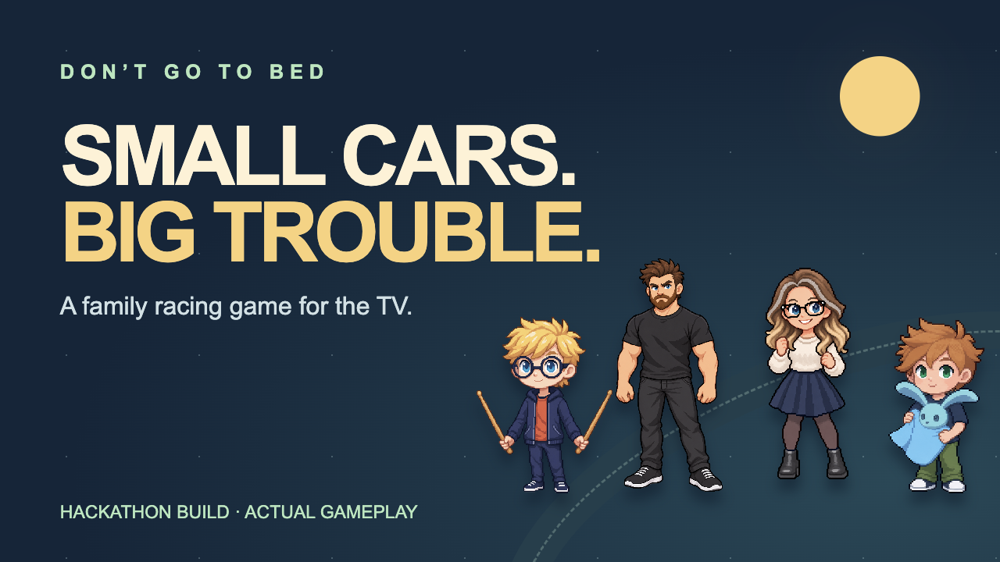

Watch the approved narrated demo · 2:30
Numbered screenshots and captions · Recording scripts · YouTube copy · Credits
Trailer and tutorial picture edits are prepared locally; their separate narration remains to record. Video masters are not part of the source repository.
Actual emulator gameplay uses scripted controllers. Controller walkthroughs use synthetic motion. Artwork and audio have separate terms.